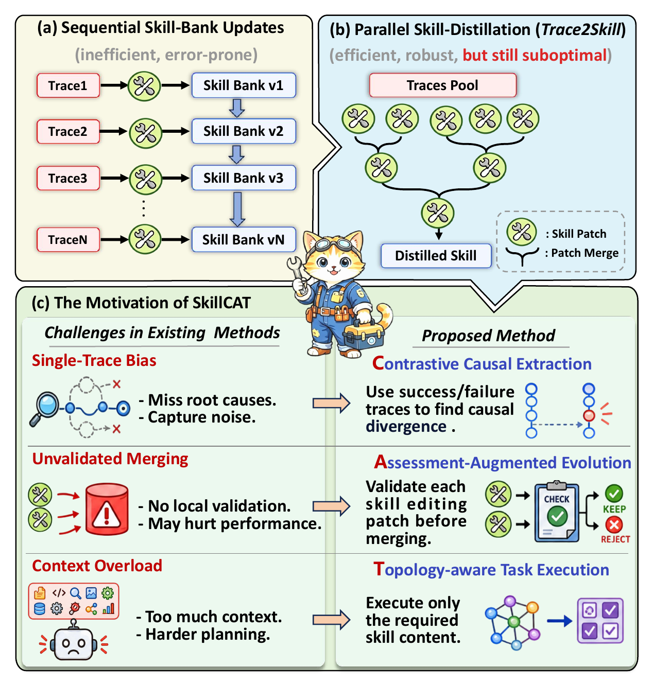
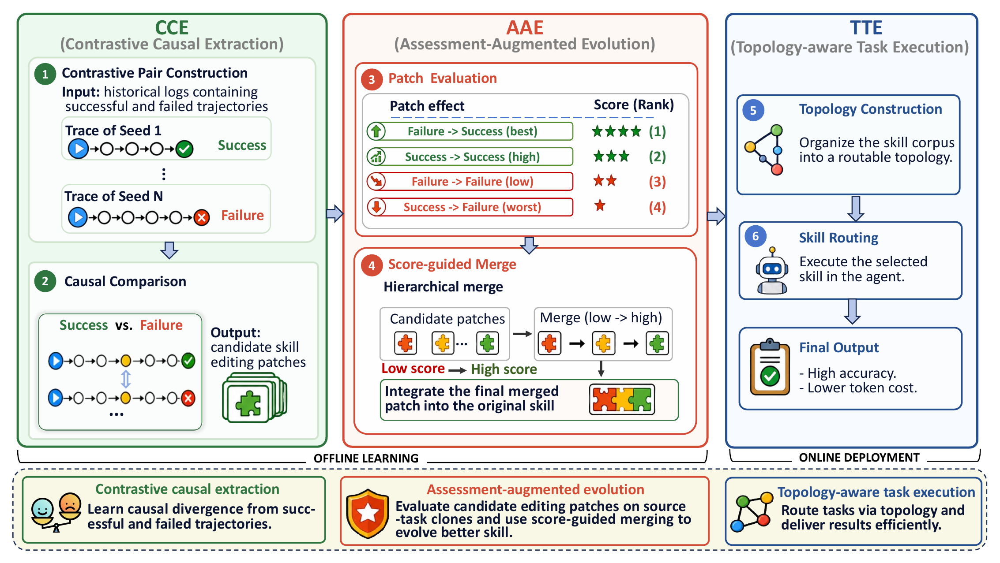
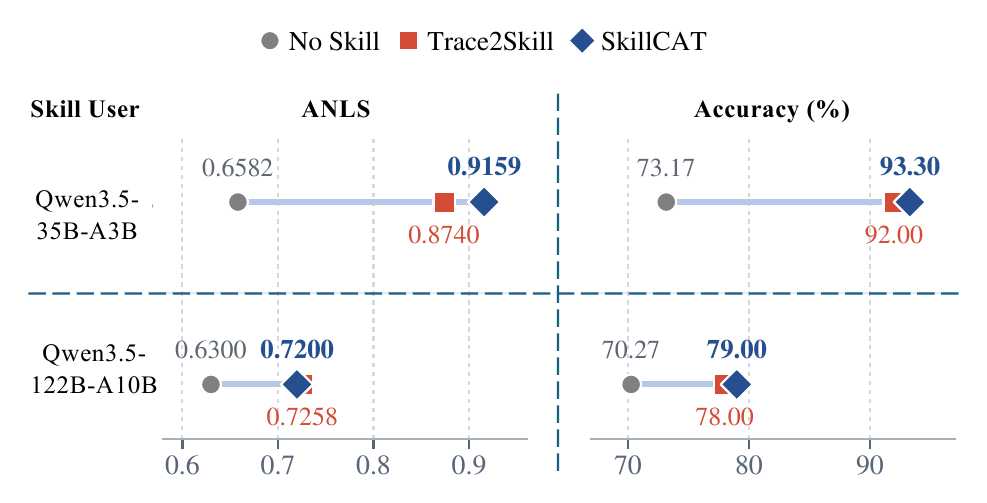
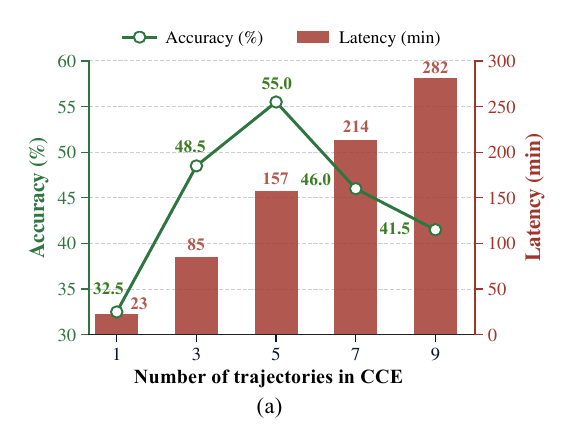
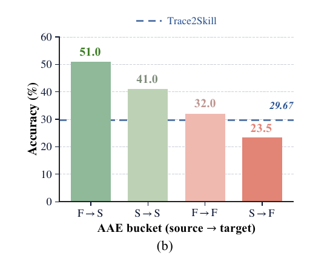
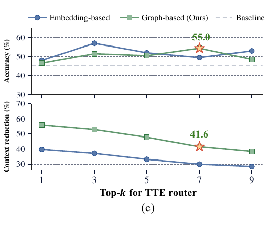

单轨迹偏差 → CCE
对同一任务的成功与失败轨迹做对照，围绕动作分歧点提取局部证据，而不是总结整条轨迹。
SkillCAT: Contrastive, Assessment-Augmented and Topology-Aware Skill Self-Evolution for LLM AgentsKunfeng Chen、Qihuang Zhong、Juhua Liu、Bo Du · 从轨迹证据到可路由技能的完整闭环
SkillCAT 的关键判断是：技能自进化失败，往往不是缺少轨迹，而是没有回答三个先后相连的问题——哪段行为真正解释成败、补丁是否会伤害原任务、执行时究竟需要加载哪些知识。
技能文档把操作流程、工具经验与约束放在模型参数之外，理论上能让智能体从历史执行中持续学习。既有方法常把一条轨迹压成一个补丁，再批量合并到技能库；这比逐条在线改写更高效，却默认“轨迹摘要就是可靠经验”“合并后的规则不会退化”“更多上下文总是更有帮助”。论文指出，这三个默认都可能失效。
单条成功轨迹可能只是偶然走通，单条失败轨迹也未必暴露根因；未经验证的补丁会把噪声甚至反效果规则写入全局技能；而把完整技能库塞入上下文，会引入无关或互相冲突的说明。三类问题分别发生在证据获取、知识写入和知识使用阶段，因此不能靠一个更强的总结提示词一次解决。
下面的三组“故障—修复”是一条因果链，而不是三个松散模块：证据不可靠会污染补丁，污染补丁会让合并结果退化，过大的技能上下文又会掩盖已有好规则。SkillCAT 的三阶段设计正好在每个接口处增加一道选择机制。
对同一任务的成功与失败轨迹做对照，围绕动作分歧点提取局部证据，而不是总结整条轨迹。
把补丁视为待检验假设，在源任务克隆上重放；只有修复失败或保持成功的补丁才进入合并。
把进化后的技能编译成能力节点拓扑，测试时只选取与当前任务相关的节点正文。

原图先对比顺序更新与 Trace2Skill 式并行蒸馏，再把单轨迹偏差、无验证合并和上下文过载分别映射到 SkillCAT 的三项机制。
阅读要点：论文真正改变的是“写入权限”：轨迹不再直接成为全局规则，补丁必须经过局部重放；运行时也不再默认加载全部知识。
CCE 与 AAE 在离线阶段形成进化技能 S*；TTE 在在线阶段针对每个新任务，从 S* 组装一个更小的运行时技能 Sj。选择性贯穿了“看什么、写什么、用什么”。
形式化地，系统接收基础技能 S₀、进化任务集合 X 和测试任务集合 X*。每个进化任务被执行多次，并由官方评测器标为成功或失败。离线阶段输出进化技能 S*；在线阶段不直接把 S* 全量注入，而是为每个测试任务 x*j 路由并组装 Sj。目标同时包含两部分：提升未见任务的执行表现，并让注入上下文保持紧凑、相关。
一条完整轨迹可以按下面三步阅读。前两步解决技能质量，第三步解决技能暴露方式；如果只保留路由而没有可靠补丁，系统只是在更精准地检索噪声。
同任务多种子运行；若同时存在成功与失败，从两集合各取一条配对，提取动作分歧、失败原因与可编辑经验。
在临时技能中隔离候选补丁，用源任务克隆测试结果变化；按分数筛选后，由低分层到高分层做层级合并。
把 S* 拆为核心技能与能力节点，路由器只读节点摘要和依赖关系，再由组装器拼出当前任务的运行时技能。

左侧 CCE 构造对比对并提取候选补丁；中间 AAE 根据源任务结果转移给补丁评分并按层合并；右侧 TTE 构建技能拓扑并只路由相关节点。
阅读要点：离线阶段的最终产物仍是一份完整技能，但在线阶段只暴露任务相关子集。质量控制和上下文压缩因此被解耦。
CCE 用大模型提取器 E 比较同任务成功轨迹 τ+i 与失败轨迹 τ−i，输出候选经验 ri。这里的“因果”更接近受控条件下的行为差异归因：输入、工具与评测器相同，但它并不是统计意义上的因果识别。若一个任务只有成功或只有失败，系统退回单轨迹提取。
rᵢ = E(τᵢ⁺, τᵢ⁻)经验记录包含局部证据、失败原因和可写入技能的教训，再与 S₀ 一起生成候选补丁 pᵢ。
AAE 用二元结果转移给补丁赋分：失败变成功得 3 分，成功保持成功得 2 分，失败仍失败得 1 分，成功变失败得 0 分。阈值 θ=2，因此只有前两类补丁保留。随后先合并较低分层，再合并高分层，使修复失败的高分补丁在后续阶段拥有更高优先级。
| 原始 → 重放 | 分数 aᵢ | 处理 | 解释 |
|---|---|---|---|
| 失败 → 成功 | 3.0 | 保留 | 补丁修复了源任务 |
| 成功 → 成功 | 2.0 | 保留 | 补丁至少未破坏已知成功 |
| 失败 → 失败 | 1.0 | 剔除 | 没有解决原问题 |
| 成功 → 失败 | 0.0 | 剔除 | 引入可观测退化 |
来源：原论文 Eq. (2)–(3)。论文实现使用 θ=2.0。
TTE 把 S* 编译为核心技能 Sc、能力节点集合 V、节点正文 Bv 和包含摘要、关键词、标题与依赖边的拓扑 G。路由器 R 在节点预算 k 内选择 Vj，组装器 A 再把核心技能与所选节点正文拼成 Sj。实验默认 k=7；路由读取轻量拓扑摘要，只有组装阶段访问节点全文。
Vⱼ = R(x*ⱼ, G, k), |Vⱼ| ≤ k Sⱼ = A(Sc, {Bᵥ | v ∈ Vⱼ})路由发生在技能内部：论文不是从多个独立技能中选一个，而是把单一进化技能拆成可组合的能力节点。
SkillCAT 的贡献可以压缩成一句话：把每个技能编辑当作需要证据支持、需要实验验证、需要按任务暴露的外部状态变更。
CCE 的价值在于减少归因歧义。同一任务、同一工具、同一评测标准下的成功与失败对，比两个不同任务的轨迹更容易定位动作分歧。它并不保证找到唯一根因，但把经验提取从“全文摘要”收缩为“围绕结果分岔点的局部诊断”，降低把无关动作写进规则的概率。
AAE 则把语言模型生成的补丁从结论降格为假设。源任务重放提供了最小可执行检验：补丁至少要修复已知失败，或不破坏已知成功。这个设计没有证明补丁在所有任务上都安全，却阻断了最直接的回归路径，也解释了为什么去掉 AAE 后性能甚至低于 Trace2Skill。
TTE 处理的是另一个层面：即使技能内容本身正确，全部加载也可能让模型在多条规则之间迷失。拓扑摘要让路由器同时看到节点语义与依赖，组装器只注入相关正文。它既可能节省上下文，也可能提高准确率；但如果底层技能未被 CCE/AAE 清洗，路由本身不能创造正确规则。
把三者放在一起，才看得出它们不是可随意替换的“技巧包”。前一阶段改变后一阶段的输入质量：CCE 让候选补丁更有依据，AAE 决定哪些知识可进入 S*，TTE 决定 S* 的哪一部分在当前任务中可见。
关注同任务轨迹的行为差异，而不是把结果标签当作整条轨迹都正确或都错误。
用任务结果转移控制持久技能更新，避免“生成即合并”。
把技能库从固定长提示改成按任务组装的上下文。
基础模型权重、ReAct 执行框架和官方任务评测器不因技能进化而更新。
论文在 SpreadsheetBench-Verified、WikiTableQuestions 和 DocVQA 上评估同模型使用、跨模型迁移、OOD 泛化、组件消融与效率权衡；所有报告结果取 3 个随机种子平均。
SpreadsheetBench-Verified 共 400 个真实 Excel 论坛任务，200 个用于进化、200 个用于留出测试，只有输出单元格全部匹配才算正确。WikiTQ 用官方答案指称匹配评估准确率，承担 OOD 表格问答测试。DocVQA 使用官方验证集 5,349 对问答图像，前 2,700 对进化、后 2,649 对测试，指标为 ANLS 与 ANLS≥0.5 的准确率。
技能作者与同模型技能用户包括 Qwen3.5-35B-A3B、Qwen3.5-122B-A10B；跨模型用户为 Gemma-4-31B-it 与 GPT-5.4-mini。初始技能分为 Anthropic 官方 xlsx 技能（Human-Written）和对应模型生成技能（LLM-Gen），对比 Trace2Skill、EvoSkill 与 SkillOpt。所有智能体运行在带文件系统和表格工具的 ReAct 风格框架中。
主表很大，下面保留最能回答“是否持续优于已有进化方法”的整体均值。数值是 SpreadsheetBench 与 WikiTQ、以及两位 Qwen 技能作者的汇总；括号中的提升应读作相对对应初始技能的绝对百分点变化。
| 技能用户 | 初始技能 | Trace2Skill | EvoSkill | SkillOpt | SkillCAT |
|---|---|---|---|---|---|
| Qwen3.5-35B-A3B | Human-Written 9.35 | 31.85 | 42.21 | 39.29 | 59.04（+49.69） |
| Qwen3.5-35B-A3B | LLM-Gen 20.16 | 31.75 | 51.32 | 42.83 | 54.23（+34.07） |
| Qwen3.5-122B-A10B | Human-Written 61.51 | 70.36 | 65.85 | 69.09 | 72.95（+11.44） |
| Qwen3.5-122B-A10B | LLM-Gen 24.95 | 40.57 | 71.51 | 72.43 | 74.64（+49.69） |
来源：原论文 Table 1，选取 Overall 列。指标越高越好；不同初始化之间不可直接当作同条件比较。
SkillCAT 在四个同模型组合上都取得最高总体均值。最大领先出现在 35B 技能用户、Human-Written 初始化：59.04 对第二名 EvoSkill 的 42.21，高 16.83 点。不过在强初始化与大模型组合的单项任务上并非处处第一：当 122B 同时作为作者和用户时，Trace2Skill 在 SpreadsheetBench 比 SkillCAT 高 0.66 点，而 SkillCAT 在 WikiTQ 只比最强对手高 0.32 点；总体优势来自跨作者与跨任务的聚合。
把 Qwen 作者进化出的 Human-Written 技能直接交给未见过的模型时，Gemma 的总体均值从 58.27 提升到 71.02，GPT-5.4-mini 从 41.39 提升到 48.57。但收益并不均匀：Gemma 在 WikiTQ 上本就有 77.99 的 No-Skill 成绩，两种 SkillCAT 变体相对 Human-Written 分别是 +0.97 与 −1.62 点，说明跨模型技能在接收者已经很强的任务上可能无益甚至略有退化。

35B 用户上，SkillCAT 的 ANLS/Accuracy 为 0.9159/93.30，高于 Trace2Skill 的 0.8740/92.00；122B 用户上，SkillCAT 的 Accuracy 为 79.00，高于 78.00，但 ANLS 0.7200 略低于 0.7258。
谨慎解读：这张图支持多模态可迁移性与准确率优势，却不能概括成所有模型、所有指标均严格领先。
组件消融固定在 Qwen3.5-35B-A3B、Human-Written 初始化与 SpreadsheetBench 上，并以 Trace2Skill 的 29.67 为参照。它检验的是模块互补性，不应外推为所有模型与任务中的固定贡献比例。
| 条件 | CCE | AAE | TTE | Accuracy ↑ |
|---|---|---|---|---|
| Trace2Skill | — | — | — | 29.67 |
| SkillCAT Full | ✓ | ✓ | ✓ | 55.00（+25.33） |
| 去掉 CCE | — | ✓ | ✓ | 32.50（+2.83） |
| 去掉 AAE | ✓ | — | ✓ | 26.00（−3.67） |
| 去掉 TTE | ✓ | ✓ | — | 46.50（+16.83） |
| 仅 CCE | ✓ | — | — | 39.00（+9.33） |
| 仅 AAE | — | ✓ | — | 34.00（+4.33） |
| 仅 TTE | — | — | ✓ | 27.50（−2.17） |
最强信号不是“完整系统最好”，而是去掉 AAE 后跌到 26.00，甚至低于 Trace2Skill；这与论文的核心主张一致：更好的证据如果不经过回放审计，仍可能生成有害规则。只保留 TTE 也下降到 27.50，说明路由无法弥补底层技能质量。CCE+AAE 在无 TTE 时已有 46.50，TTE 再把它推到 55.00，体现“先清洗内容，再选择上下文”的顺序。

5 条轨迹达到 55.0；继续增至 7/9 条后，准确率下降而延迟继续增加。

F→S、S→S、F→F、S→F 四组准确率依次为 51.0、41.0、32.0、23.5。

论文默认图路由 Top-k=7：准确率 55.0，上下文缩减 41.6%；两种路由在多数预算下高于全技能基线。
CCE 从 1 条轨迹的 32.5 提升到 5 条的 55.0，但 7/9 条降至 46.0/41.5；对应推理时间由 23 分钟增至 157、214、282 分钟。AAE 的四档结果验证了高回放分数与更好下游表现之间的对应关系；TTE 则展示了准确率与上下文体积的联合权衡。
阅读要点：五条轨迹只是该实验中的经验最优点，不是越多越强；AAE 的单调趋势为 θ=2 提供了实证依据。路由效率来自少装载节点，不代表离线进化本身更便宜。
论文有力证明了选择性技能进化在三个基准中的实用价值，但尚未证明补丁具有严格因果正确性，也没有覆盖开放世界长期部署中的持续漂移、成本与安全问题。
首先，CCE 的“因果”建立在同任务条件控制与大模型对行为分歧的解释上。它比单轨迹摘要更接近根因，却仍可能把相关差异误判为原因；每个同时包含成败结果的任务只随机抽一对轨迹，纯成功或纯失败任务又退回单轨迹流程。因而更准确的表述是“对比式因果线索提取”，而不是形式化因果识别。
其次，AAE 的源任务重放是一种局部安全检查：它能发现补丁是否立刻破坏关联任务，却不能保证跨任务、跨工具版本或长期组合后无副作用。阈值只依赖二元成败转移，没有利用置信度、重复重放分布或回归测试集；高分补丁的层级合并也仍由语言模型完成，合并冲突并未被形式验证。
第三，实验覆盖三类任务与四个技能用户，主要仍集中在表格操作、表格问答和文档问答。跨模型实验只复用 Human-Written 初始化下由 Qwen 作者进化的技能；论文报告三随机种子均值，但未给置信区间或显著性检验。Figure 4 明确展示五轨迹已需 157 分钟推理时间，完整进化、重放和路由的总 token/算力成本则没有统一汇总。
这些限制并不否定结果，而是帮助确定可迁移边界。把 SkillCAT 用到代码代理、浏览器代理或企业流程时，最值得复用的是三道治理门；最需要重新设计的是评测器、回归任务集和成本预算。
同任务对照优先于单轨迹总结；外部知识写入前先做可执行回放；大技能文档在推理时按依赖与相关性裁剪。
多次重放与统计置信度、跨任务回归套件、版本化技能图、补丁回滚、路由失败兜底和端到端成本监控。
先复核 Table 2 的 AAE 消融，再复核 Figure 4 的五轨迹峰值，最后检查 Top-k=7 在不同技能规模下是否仍最优。
49.69 是特定汇总设置相对初始技能的绝对百分点增益；它不等于所有任务都提升 49.69%，也不是相对百分比。
来源与版本：Kunfeng Chen 等，arXiv:2606.13317v2，2026-07-29。本文依据论文 PDF 与公开 TeX 源码整理，保留原论文图表与数值口径；未进行独立代码复现。论文未提供单独的 Limitations 章节，本节边界分析依据方法假设、实验设置和未报告项作编辑性归纳。
↑ 返回页首